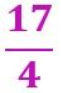
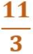
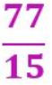

Toda fracción se puede escribir en forma decimal, para ello basta con efectuar la división no entera del numerador entre el denominador.
Al calcular una fracción con decimales, puede obtenerse un decimal EXACTO o un decimal PERIÓDICO. Veámoslo con algunos ejemplos.
De fracción a decimal exacto
Convertir la siguiente fracción a decimal: 
Realizamos una división normal del numerador entre el denominador, es decir 17 entre 4:
Se obtiene que el resultado es 4,25 que es un decimal exacto
De fracción a decimal periódico puro
Ahora queremos pasar de fracción a decimal: 
Se realiza la división:
Y obtenemos un decimal periódico puro.
De fracción a decimal periódico mixto
Sea la siguiente fracción: 
Vamos a pasarla a decimal. Para ello se realiza la división:
Se obtiene un decimal periódico mixto.